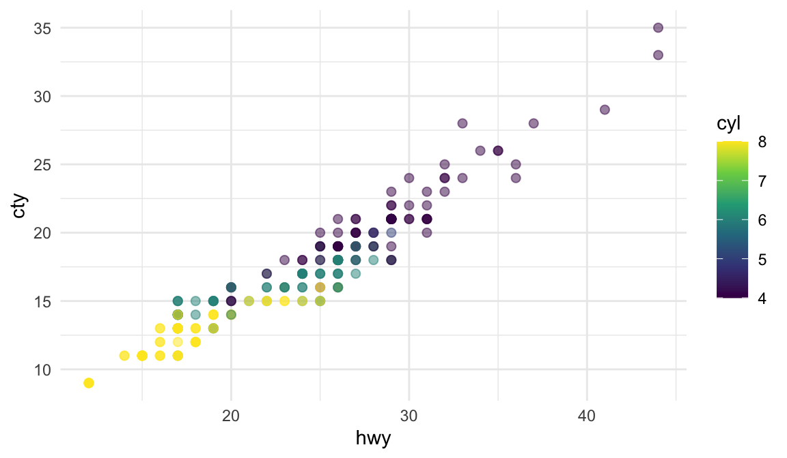
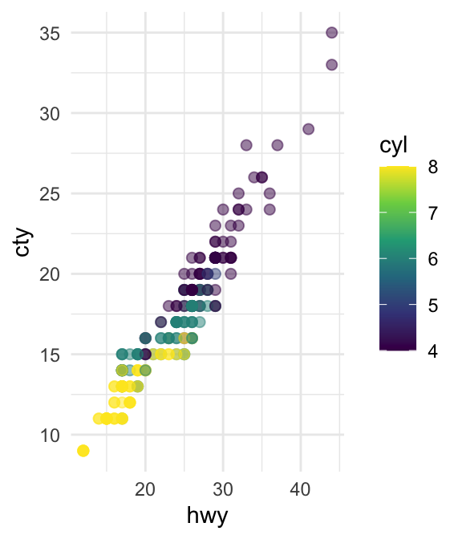
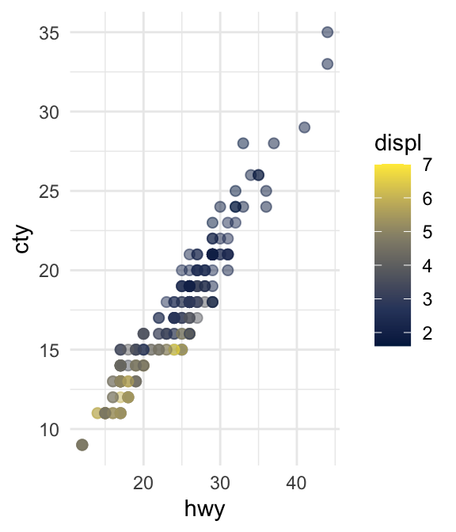

Quarto Computations
This dataset contains a subset of the fuel economy data from the EPA. Specifically, we use the mpg dataset from the ggplot2 package.
The visualization below shows a positive, strong, and linear relationship between the city and highway mileage of these cars. Additionally, mileage is higher for cars with fewer cylinders.
Figure 1 shows a positive, strong, and linear relationship between the city and highway mileage of these cars.
ggplot(mpg, aes(x = hwy, y = cty, color = cyl)) +
geom_point(alpha = 0.5, size = 2) +
scale_color_viridis_c() +
theme_minimal()
Another plot with render multiple figures.
na Figure 2 (a) deu um resultados e na Figure 2 (b) deu outro.
ggplot(mpg, aes(x = hwy, y = cty, color = cyl)) +
geom_point(alpha = 0.5, size = 2) +
scale_color_viridis_c() +
theme_minimal()
ggplot(mpg, aes(x = hwy, y = cty, color = displ)) +
geom_point(alpha = 0.5, size = 2) +
scale_color_viridis_c(option = "E") +
theme_minimal()

dataframes
Na forma inline:
There are 234 observations in our data.
The average city mileage of the cars in our data is 16.86 and the average highway mileage is 23.44.
E os dataframes podem ser printados de uma forma melhor.
mtcars